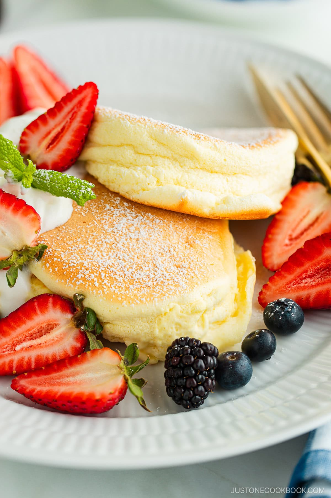

Home

These Fluffy Japanese Soufflé Pancakes are like eating soft and cottony clouds!
So pillowy soft and delicious! – These delicate pancakes are extra fluffy compared to regular flapjacks thanks to the air bubbles whipped into the egg whites. I love the fizzy sound of air bubbles escaping when I cut into them!
A comforting weekend treat – Pancakes are the happiest comfort food. This recipe is the perfect cooking project for a leisurely weekend brunch or a special occasion—think birthdays, anniversaries, Mother’s Day, or Valentine’s Day.
Ingredients
- large eggs
- cake flour
- whole milk
- sugar
- vanilla extract
- baking powder
- neutral oil - for greasing the pan
- water - for steaming
- Toppings:
- confectioner's sugar
- maple syrup
- heavy (whipping) cream and sugar - optional, for the fresh whipped cream; see how I make it in the recipe below
- fresh berries - optional; I love using strawberries and blueberries
Steps
- Mix the batter. Separate the egg whites and yolks into two bowls and put the bowl of whites in the freezer for 15 minutes. Whisk the yolks, milk, and vanilla extract with a mixer until thick and frothy. Sift the flour and baking powder into the liquid mixture and whisk by hand to combine; do not overmix.
- Make the meringue and preheat the pan. Beat the half-frozen egg whites until frothy and opaque. Gradually add the sugar while beating at high speed until stiff peaks form. Look for meringue that holds a peak and has a tip that folds over. Start preheating a large, nonstick frying pan to 300ºF (150ºC) on the lowest heat and lightly grease it with oil.
- Gently fold the meringue into the batter by hand. Use a hand whisk to fold in the whipped egg whites, one-third at a time. Gently incorporate without breaking the air bubbles. Mix until well combined and homogeneous.
- Stack three scoops of batter for each pancake. Keep your preheated frying pan at 300ºF (150ºC) over low heat at all times. For the first pancake, place one small scoop of batter in the pan in a tall mound. Then, stack a second scoop on top. Repeat to make the other two pancakes. Then, mound a third scoop onto each, keeping the batter piled high.
- Add water, cover, and set a timer for 6–7 minutes. A splash of water in the pan creates steam and covering with a lid locks in the moisture. After 2 minutes, add a final scoop of batter to each pancake. Cover and keep cooking.
- Flip over, add more water, and cover to finish cooking. When the timer goes off, use an offset spatula to very gently flip the pancakes with a “rolling over” motion. Add another splash of water and cover the pan. Set the timer for 4–5 minutes and cook until the other side is nicely browned.
- Serve! Transfer to individual plates. Dust with confectioners’ sugar and drizzle with maple syrup. I love topping them with fresh whipped cream and fresh berries. Enjoy!